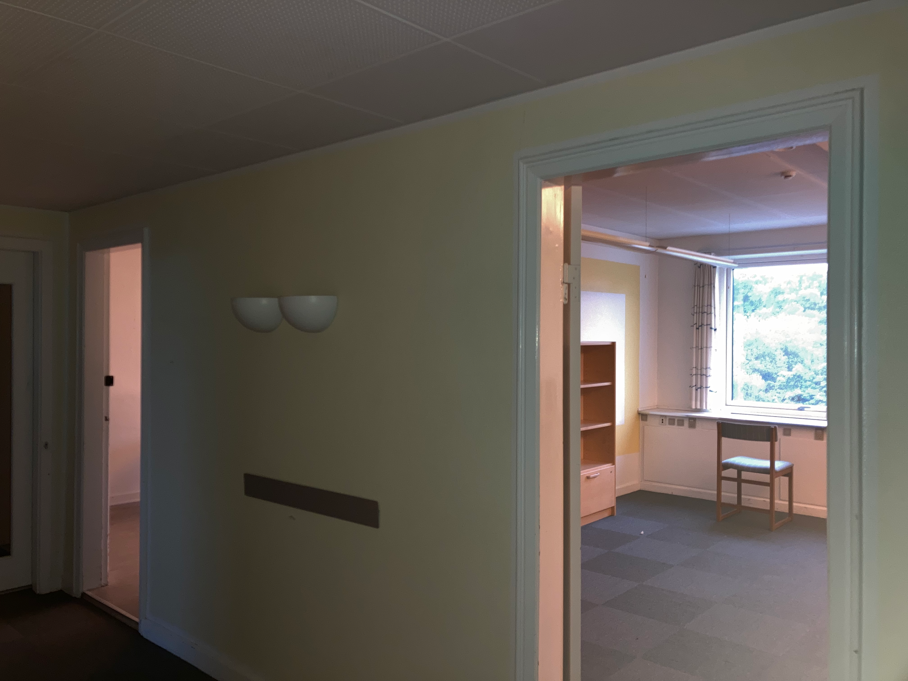
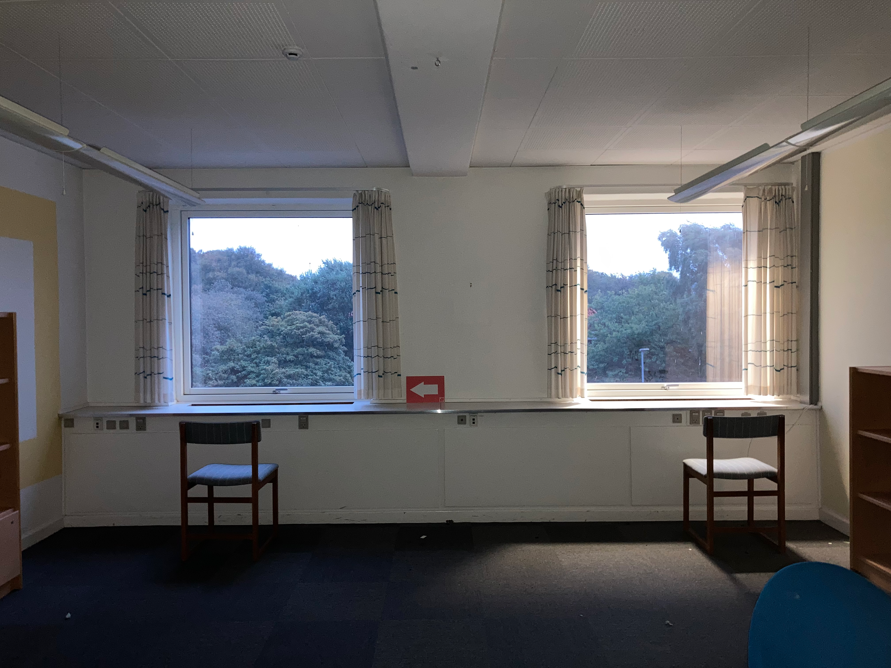
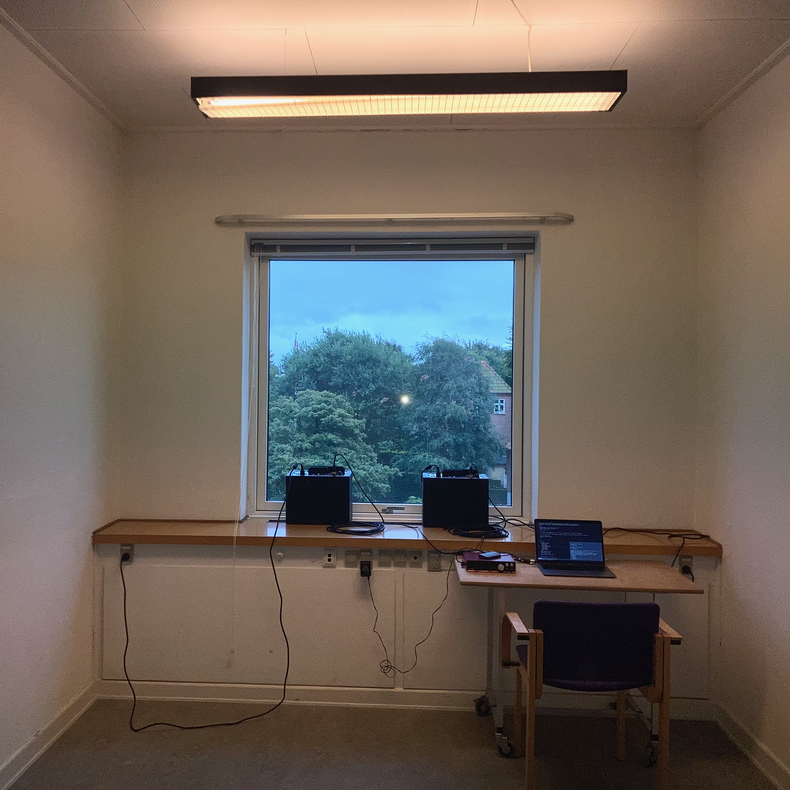
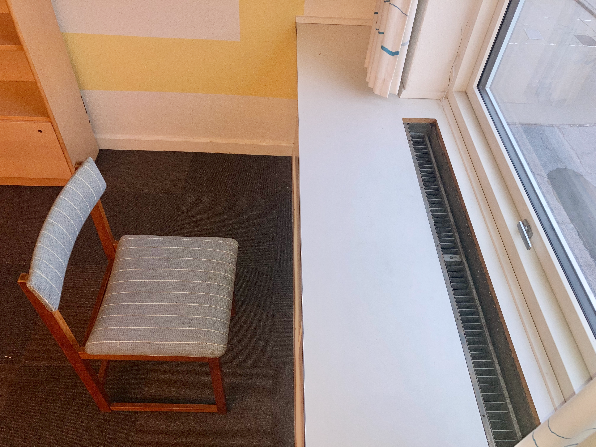
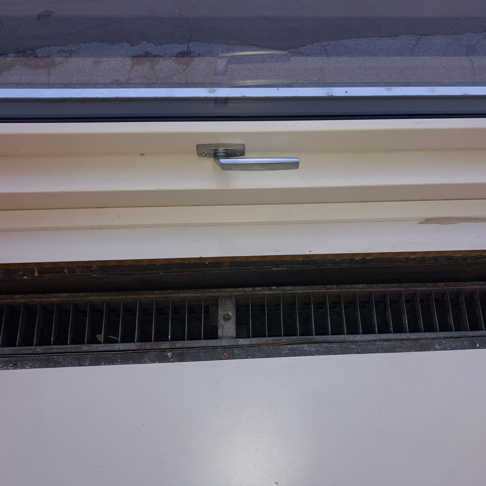
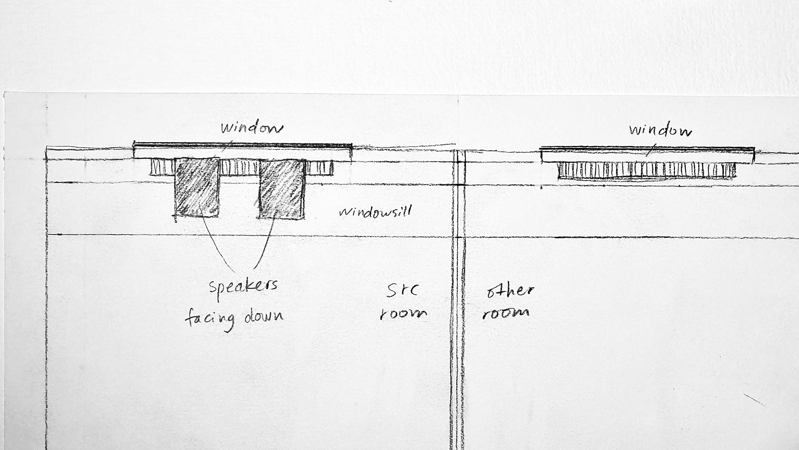
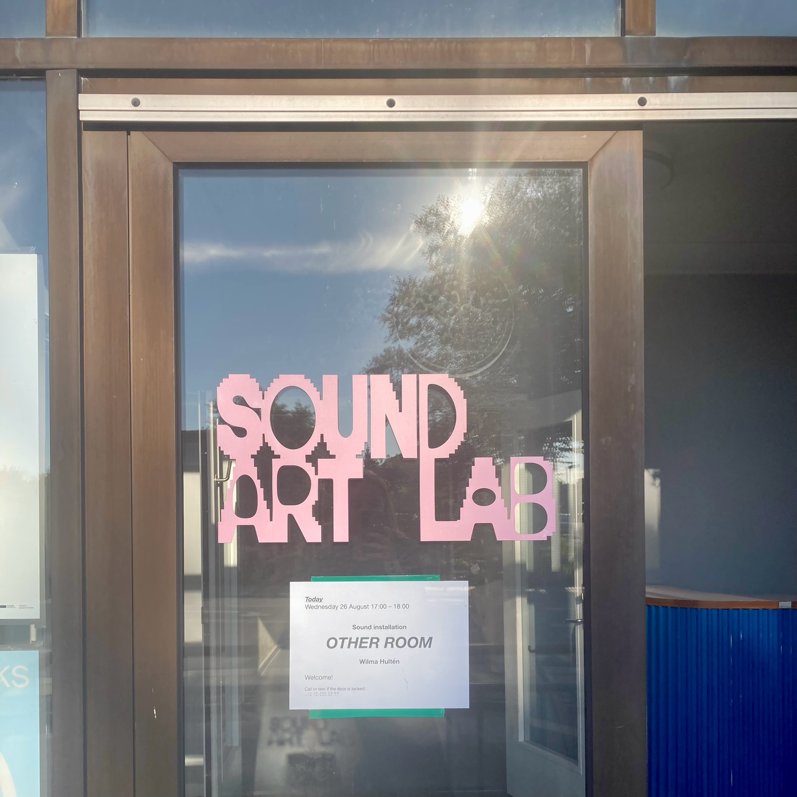

Wilma Hultén
Other Room
Other Room is a site-specific sound installation that I created during a residency at Sound Art Lab in Struer, Denmark. In this two-room installation, sound was transmitted through the structures of the building using unusual speaker placement. The installation was open to the public for an hour on 26 August, 2026.

When I first came to Sound Art Lab, I was struck by the amount of physical space available to me. For a substantial portion of my time, I had an entire floor to myself.

Inspired by the work of American sound artist Maryanne Amacher, I started experimenting with unusual speaker placement. I had speakers facing the walls, and used material like metal to direct the reflections of sound in the room. I tried to find the resonant frequencies of the room. When I walked around and listened, I heard that something had started to vibrate and making sound in the room next door. It was like I had set some inner channel in the ventilation system by the windows in motion.

I decided to enhance this by placing my speakers on the windowsill, facing down. I played different sets of frequencies and recorded the resulting sound in the other room. I then used these recordings in the sound installation to further amplify the effect.
The piece is created as an algorithmic process that uses a certain degree of randomness. It could theoretically go on forever.

When I opened up the installation to the public, I invited them to experience the sound with the following words.
You can interact with the sound installation in many ways.
Open or close the doors.
Keep one door open and one closed.
Listen outside in the corridor.
Listen to sounds far away.
Put your ear very close to the windowsill.
Listen to the sound transmitted through the walls as they appear in a way that is unique for exactly this moment.
Move your head around.
Sit still for a really long time.
Listen inside your own head.


Audio recordings
|
Recordings made on August 23, 2026.
Microphones: AKG C451 B/ST. Stereo set on mic stands |
|
| Short distance from windowsill, door half-open. | |
| Same as above, but with fewer parallel patterns. | |
| Same as above, but very close miked. Some weird high frequencies emerge in this one! | |
| Same as above, but microphones placed in the middle of the room. | |
| Same as above, but in the source room. |
